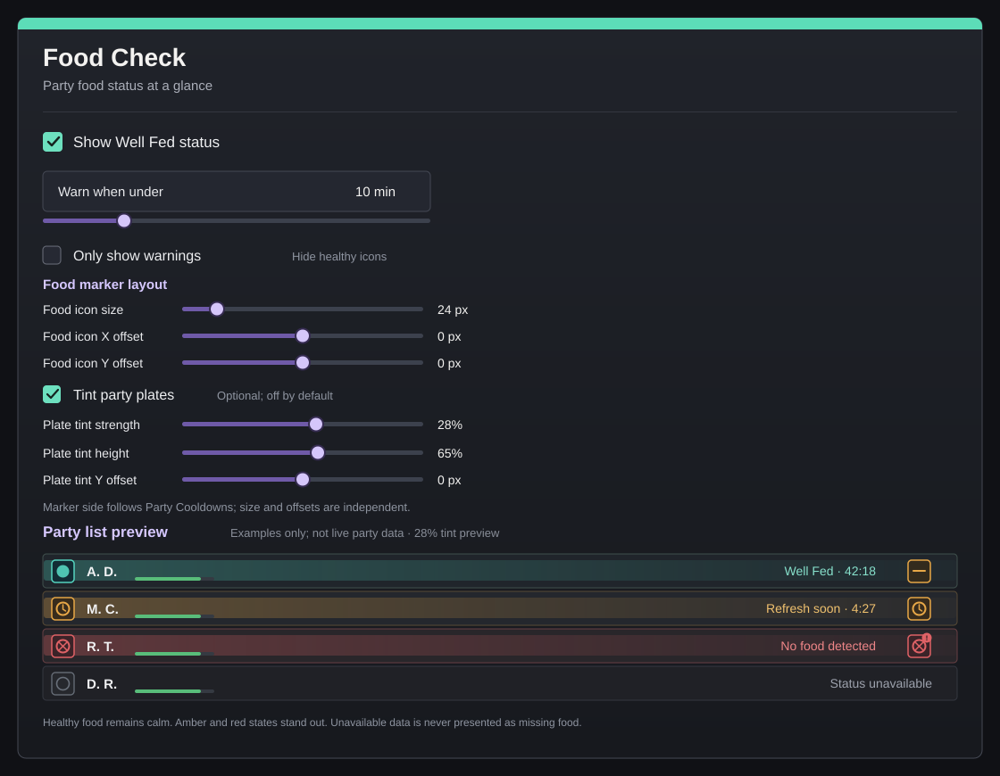

HUD
See party food status at a glance
Food Check adds a small Well Fed marker beside the game's party list. It separates healthy food, food that is nearly out, and missing food without confusing unavailable status data for a missing buff.
Optional and off by default
Open
/bd, choose HUD > Food Check, and enable Show Well Fed status.

Warning thresholdChoose 1 to 60 minutes. Food below the selected remaining time uses the amber state.
Only show warningsHide healthy markers. Missing food and food below the threshold remain visible.
Food icon sizeSet the Well Fed icon from 16 to 72 px. Its starting size inherits your current Party Cooldowns icon size.
Food icon X/Y offsetsMove the icon up to 300 px from its cooldown-layout slot. Negative X/Y move left/up; positive X/Y move right/down.
Tint party platesOptionally add a status tint to each party row. Adjust its 4-40% strength to suit your background and contrast. Tint starts off disabled.
Plate tint heightSet the tint to cover 20-100% of the party row's height without changing its width. Use the Y offset to move it vertically.
Plate tint Y offsetMove the tint up or down by up to 50 px without changing its size. Negative values move it up; positive values move it down.
PreviewThe in-plugin preview shows active, expiring, missing, and unavailable examples. It uses sample values, not your current party's food timers.
PlacementThe marker's side and starting slot follow HUD > Party Cooldowns > Layout; its size and X/Y offsets can be customized here.
Live status checks run once per second only while you are out of combat inside an instance. The marker hides when status data is unavailable, and no party message is sent automatically.
Use /foodcheck at any time to print the exact remaining Well Fed time for your current party in system chat. Players without the buff are shown as not active.